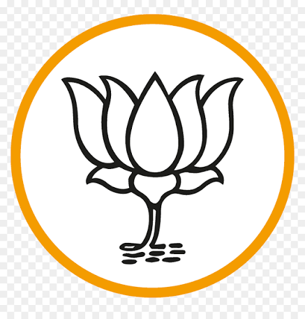

About BJP

Bharatiya Janata Party (BJP) is one of the largest political parties in India. It was established in 1980 and is recognized by the Election Commission of India.
The party participates in elections across the country and has formed governments at both the Central and State levels.